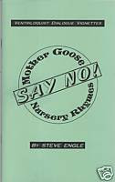

Nursery Rhymes with purpose
5/16/2009
{kind=link}

By Steve Engle:
I'm always pleasantly surprised as how well nursery rhymes that have a humorous twist or ending go over with an audience...even adults! I've been using several humorous ones for years. The little volume, "Mother Goose 'Say No' Nursery Rhymes is written to use nursery rhymes to teach or reinforce lessons for children on topics such as drugs, health, ecology, etc.
I call the recycled rhymes "Dialogue Vignettes" because - though they are complete in themselves - most are short. They are intended to introduce a subject, add color to a routine, or as a discussion starter. Vignettes: Humpty Dumpty, Little Miss Muffet, Jack and Jill, Old Mother Hubbard, Jack Be Nimble, Old King Cole, Twinkle Twinkle Little Star, Little Jack Horner.
* * * * * *
Note from Clinton: This book is $6.00 postpaid. mahertalk@aol.com
I'm always pleasantly surprised as how well nursery rhymes that have a humorous twist or ending go over with an audience...even adults! I've been using several humorous ones for years. The little volume, "Mother Goose 'Say No' Nursery Rhymes is written to use nursery rhymes to teach or reinforce lessons for children on topics such as drugs, health, ecology, etc.
I call the recycled rhymes "Dialogue Vignettes" because - though they are complete in themselves - most are short. They are intended to introduce a subject, add color to a routine, or as a discussion starter. Vignettes: Humpty Dumpty, Little Miss Muffet, Jack and Jill, Old Mother Hubbard, Jack Be Nimble, Old King Cole, Twinkle Twinkle Little Star, Little Jack Horner.
* * * * * *
Note from Clinton: This book is $6.00 postpaid. mahertalk@aol.com